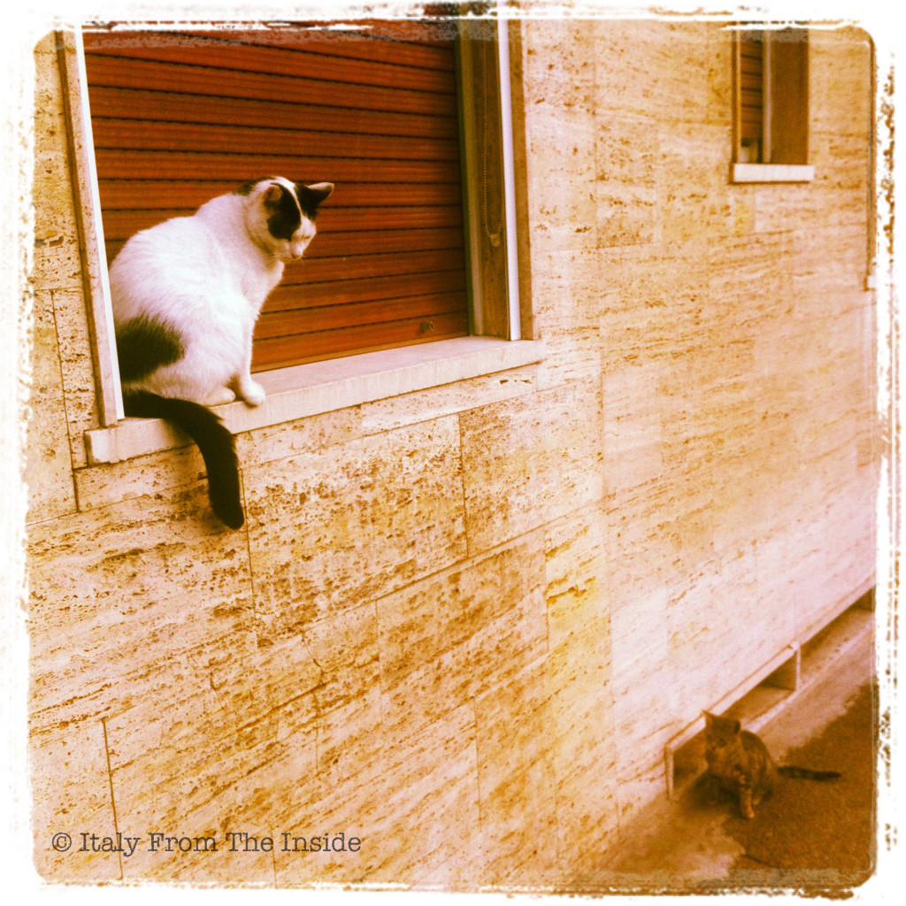

In Italy there is a multitude of stray cats, the so called gatti randagi. Even though only a few of them are welcomed in some homes as permanent residents, the ones living on the streets are taken care of by many Italian cat lovers. Consequently they live a content life of laziness and freedom. Gatti fortunati.